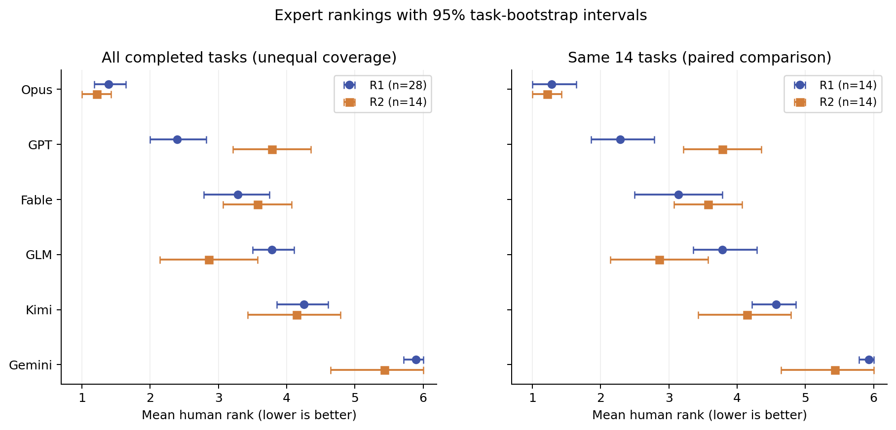
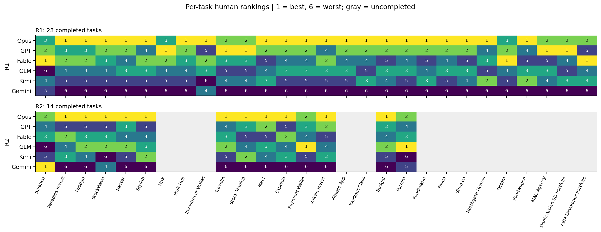
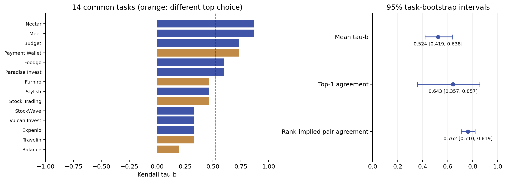
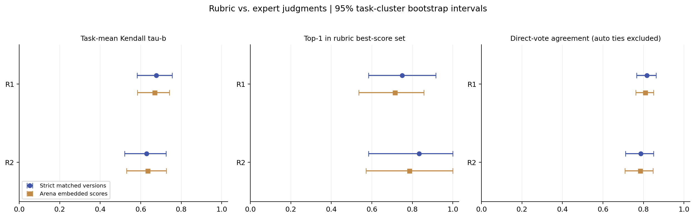
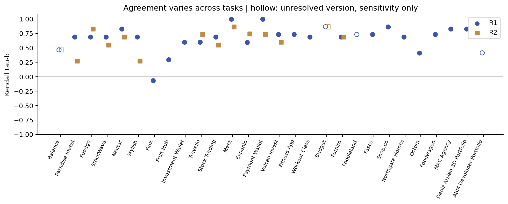
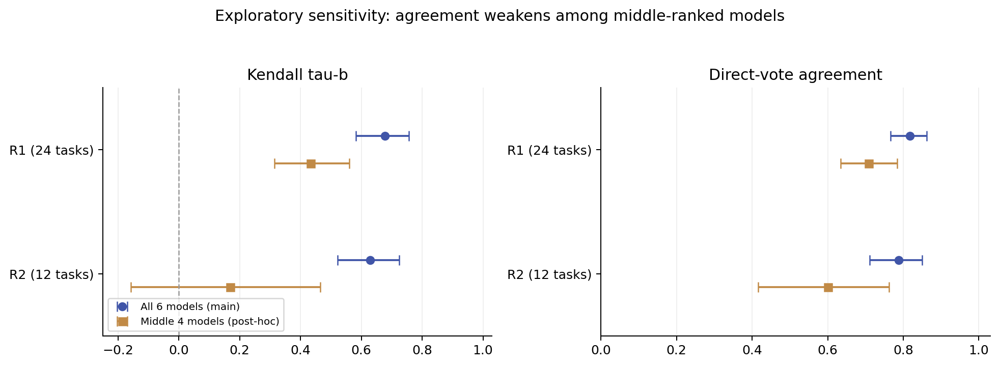

范围：本地 2026 年 11 月 8 日可用快照。分析任务是专家排名、评审间一致性，以及 Rubric 与专家判断的一致性。Chat Bot AI 整题的人评会话均排除，避免旧 GPT 版本参与或影响排序；不对更新后的 GPT 产物作评价。
采用 sorting.json 的排序与投票。SQLite 的 FinX 会话少两张后续投票（导出末票为 2026-11-06 10:16:48 UTC），因此导出有42个完整会话，SQLite有41个；资产清单中“SQLite比导出新”的判断与逐票证据不符。另一处状态差异属于已排除的 Chat Bot AI。候选身份与候选内自动分数取SQLite，再与交付索引、原始评分库逐条校验。
| 集合 | 范围 | 用途 |
|---|---|---|
| 专家评价集 | R1 28题；R2 14题；共同14题；6模型 | 独立呈现专家排序与共同题比较 |
| 严格版本匹配主分析 | 24个全模型版本均已核实的题目 | Rubric主结果；同时核对run、原始score_id/分数与全部参评截图SHA256 |
| 扩展敏感性分析 | 额外纳入4道Gemini版本未在本地查到的题目 | 仅使用Arena候选中记录的cc_score，不冒充已复核原始评分 |
| 排除 | Chat Bot AI整题，含其他模型的该题投票 | 避免旧GPT参与产生的间接排序影响 |
174个Arena候选中169个通过同run、原始fixed_v4评分记录、数值与截图哈希联合核验。另5个run不同：Chat Bot AI×GPT已排除；Balance、Budget、Foodieland、ABM×Gemini只进入扩展敏感性分析。Qwen仅有3题且不在Arena，故不进入本报告。


| 题集 | 评审 | 模型 | 平均名次 [95% CI] | 第一名次数 |
|---|---|---|---|---|
| all_completed | R1 | Opus | 1.39 [1.18, 1.64] | 20/28 |
| all_completed | R1 | GPT | 2.39 [2.00, 2.82] | 5/28 |
| all_completed | R1 | Fable | 3.29 [2.79, 3.75] | 3/28 |
| all_completed | R1 | GLM | 3.79 [3.50, 4.11] | 0/28 |
| all_completed | R1 | Kimi | 4.25 [3.86, 4.61] | 0/28 |
| all_completed | R1 | Gemini | 5.89 [5.71, 6.00] | 0/28 |
| all_completed | R2 | Opus | 1.21 [1.00, 1.43] | 11/14 |
| all_completed | R2 | GPT | 3.79 [3.21, 4.36] | 0/14 |
| all_completed | R2 | Fable | 3.57 [3.07, 4.07] | 0/14 |
| all_completed | R2 | GLM | 2.86 [2.14, 3.57] | 2/14 |
| all_completed | R2 | Kimi | 4.14 [3.43, 4.79] | 0/14 |
| all_completed | R2 | Gemini | 5.43 [4.64, 6.00] | 1/14 |
| common_tasks | R1 | Opus | 1.29 [1.00, 1.64] | 11/14 |
| common_tasks | R1 | GPT | 2.29 [1.86, 2.79] | 2/14 |
| common_tasks | R1 | Fable | 3.14 [2.50, 3.79] | 1/14 |
| common_tasks | R1 | GLM | 3.79 [3.36, 4.29] | 0/14 |
| common_tasks | R1 | Kimi | 4.57 [4.21, 4.86] | 0/14 |
| common_tasks | R1 | Gemini | 5.93 [5.79, 6.00] | 0/14 |
| common_tasks | R2 | Opus | 1.21 [1.00, 1.43] | 11/14 |
| common_tasks | R2 | GPT | 3.79 [3.21, 4.36] | 0/14 |
| common_tasks | R2 | Fable | 3.57 [3.07, 4.07] | 0/14 |
| common_tasks | R2 | GLM | 2.86 [2.14, 3.57] | 2/14 |
| common_tasks | R2 | Kimi | 4.14 [3.43, 4.79] | 0/14 |
| common_tasks | R2 | Gemini | 5.43 [4.64, 6.00] | 1/14 |

| 指标 | 估计 [95% CI] |
|---|---|
| 平均Kendall τ-b | 0.524 [0.419, 0.638] |
| Top-1一致率 | 0.643 [0.357, 0.857] |
| 排序隐含两两一致率 | 0.762 [0.710, 0.819] |


| 集合 | 评审 | 题数 | τ-b [95% CI] | Top-1集合命中 | 唯一Top-1命中 | 直接票一致率 [95% CI] | 自动同分票 |
|---|---|---|---|---|---|---|---|
| strict_matched | R1 | 24 | 0.677 [0.583, 0.756] | 18/24 | 17/24 | 179/219; 0.817 [0.766, 0.862] | 10 |
| strict_matched | R2 | 12 | 0.629 [0.521, 0.725] | 10/12 | 10/12 | 89/113; 0.788 [0.712, 0.850] | 9 |
| arena_embedded_sensitivity | R1 | 28 | 0.669 [0.584, 0.742] | 20/28 | 19/28 | 207/256; 0.809 [0.762, 0.850] | 11 |
| arena_embedded_sensitivity | R2 | 14 | 0.634 [0.530, 0.727] | 11/14 | 11/14 | 105/134; 0.784 [0.709, 0.847] | 9 |
移除总体两端的Opus与Gemini，仅保留GPT、Fable、GLM、Kimi。此集合由本次结果选择，属于事后探索，不作为预先指定的主检验。

| 评审 | 中间4模型τ-b [95% CI] | 中间4模型直接票一致率 [95% CI] |
|---|---|---|
| R1 | 0.434 [0.314, 0.560] | 68/96; 0.708 [0.634, 0.784] |
| R2 | 0.168 [-0.158, 0.466] | 30/50; 0.600 [0.417, 0.762] |
快照敏感性：只保留SQLite也标记完成的严格匹配会话时，R1样本降为23题，τ-b为0.709 [0.644, 0.770]；R2不变。这一处理剔除了FinX，不能用来替代较新导出的主结果。
不应宣称：自动评价已经替代专家；Rubric比专家更接近真值；一次总体相关系数证明细粒度量表有效；模型间所有差异均统计显著；把两评审42个会话当作42道独立题；把自适应比较票一致率解释为均匀抽样全部模型对的一致率。
在两位专家共同完成的14道任务上，Opus均取得最低平均名次（分别为1.29与1.21），且各被选为11道任务的首选。专家对整体排序具有正向但不完全一致的判断，平均Kendall τ-b为0.524（95%按题bootstrap区间[0.419, 0.638]），首选一致率为9/14。两位专家对GPT与GLM的相对位置存在差异：共同题平均名次在R1为2.29与3.79，在R2为3.79与2.86。因此排名应按评审呈现，不能将现有数据概括为单一专家共识。
在产物版本、原始评分记录及截图哈希均一致的样本中，Rubric与R1、R2的逐题平均τ-b分别为0.677[0.583, 0.756]（24题）与0.629[0.521, 0.725]（12题）。排除自动同分后的实际胜负票一致率分别为81.7%[76.6%, 86.2%]与78.8%[71.2%, 85.0%]。专家首选落入自动最高分集合的比例分别为18/24与10/12；若要求唯一最高分，分别为17/24与10/12。这些结果支持自动评价捕捉总体相对质量，但不能证明自动评价可以替代专家判断。
事后移除总体排名两端的Opus和Gemini后，中间四模型的排序一致性下降到0.434[0.314, 0.560]与0.168[-0.158, 0.466]。该探索性结果提示，总体一致性部分依赖于差异较大的模型区分，对相近质量产物的细分仍需更多专家及任务验证。
运行 python arena/analysis/priority1.py。输入快照SHA256、全部统计和区间见 summary.json；版本核验见 version_audit.csv；排序明细见 expert_rankings.csv；逐题一致性见 rubric_agreement_by_task.csv；原始有效票见 direct_votes.csv。所有图另有同名PDF可用于论文排版。